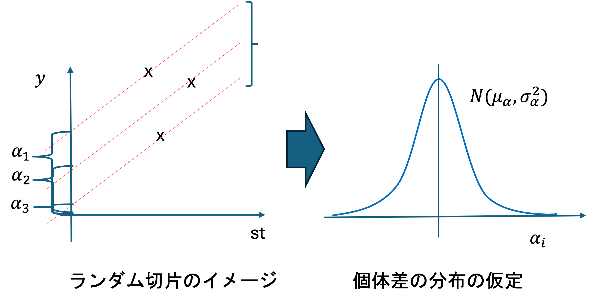
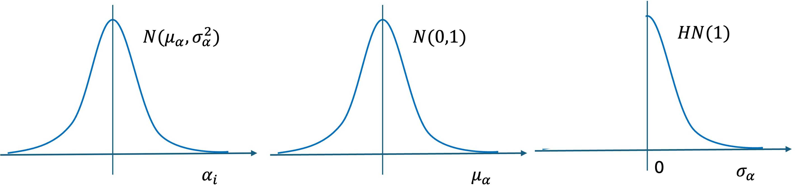
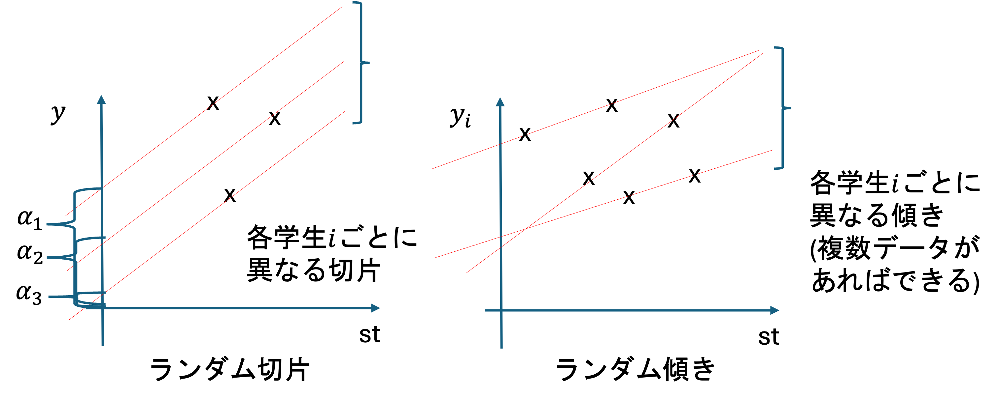

個体差のモデリング
恒等リンク関数を用いたモデリングでは, 線形回帰と同じ形式の式となります. 一般化線形モデル単体では, 個体ごとの切片 \alpha_i を安定して推定することはできません. 個体差を扱えるのは, 一般化線形モデルに個体ごとのランダム効果を加えた階層モデル (一般化線形混合モデル, GLMM) です. 以下では, その理由と構成を見ていきます.
線形回帰での問題
個体差をモデルに取り込もうとする場合, 線形回帰では以下のような問題が発生します:
ダミー変数の導入: 各学生の個別の学力を推定するために, 学生ごとにダミー変数を導入する方法が考えられます.
データ数が少ない場合の問題: 各学生毎にデータ数が少ない場合 (今回は 1 人 1 データ), 各ダミー変数は誤差と等しくなります.
過学習の問題: 結果として, データ = 予測値 (\hat{y}_i = y_i) としているのと変わらなくなります. これは推定の意味がなく, 過学習を起こしている状態です.
ベイズ推論による解決
ベイズ統計学では, この問題を以下のように解決します:
階層構造の導入: 各学生の学力 \alpha_i に対して, 事前分布として正規分布 \alpha_i \sim N(\mu_{\alpha}, \sigma_{\alpha}^2) を設定します. これにより, 階層ベイズモデル (hierarchical Bayesian model) またはランダム効果モデル (random effects model) を構築します.
分布の母数を推定: 推定するのは個別の学力 \alpha_i ではなく, その分布の母数 (\mu_{\alpha}, \sigma_{\alpha}) です. これにより, データ数が少なくても, 全体の分布から情報を借用 (borrowing strength, 情報の共有) して推定を行うことができます. 各学生のデータが少なくても, 他の学生のデータと組み合わせることで, より安定した推定が可能になります.
新しいデータへの対応: 分布の母数 (\mu_{\alpha}, \sigma_{\alpha}) が推定されているため, 新しい学生のデータが得られた場合でも, 推定された分布 N(\mu_{\alpha}, \sigma_{\alpha}^2) に基づいて学力を推定することが可能になります. これにより, 汎化性能の高いモデルを構築できます.

それでは実際に, モデルを構築してみましょう.
モデルの仮定
階層ベイズモデルでは, 仮説に従って以下のように分布を設定します.
- 仮説: 基礎学力は学生によって異なる
- 個別に異なる \alpha_i
- 仮定: 基礎学力は正規分布に従う
- \alpha_i \sim N(\mu_{\alpha}, \sigma_{\alpha}^2)
- これを事前分布 (prior distribution) といいます.
- 更にそれぞれの母数の分布を仮定する
- \mu_{\alpha} \sim N(0, 1)
- \sigma_{\alpha} \sim HN(1)
- ここで, HN は半正規分布 (Half-Normal distribution) を表します.

このように, パラメータの分布のパラメータ (超パラメータ) についても分布を仮定することで, 階層的な構造を持つベイズモデルを構築します. これは階層事前分布 (hierarchical prior) と呼ばれます.
ランダム傾きとランダム切片
これまで, 学生の基礎学力の違い (ランダム切片 \alpha_i) について考えてきましたが, 他にも個体差として考慮できる要素があります.
- 仮説: 勉強時間による効果は人によって違う
ただし, 学生個別の個体差 \alpha_i (ランダム切片) のように, 学生個別の勉強時間あたりの GPA の上昇率 \beta_{st,i} \cdot S_t という推定は, 今回のデータではモデル化できません.
このような個別の傾きをランダム傾き (random slope) といいます.
なぜモデル化できないのか?
学生 1 人につき 1 つしかデータがない: 今回のデータでは, 各学生について 1 つの観測値しかありません.
切片はそれぞれの値から推定できる: 切片 \alpha_i は, 以下のように各学生のデータから直接推定できます: \alpha_i = y_i - \beta_{st} \cdot S_t - \beta_{ss} \cdot S_s
傾きは複数の観測点が必要: 傾きは「変化の傾向 (勾配)」なので, 推定には複数の観測点が必要です. 傾き \beta_{st,i} を推定するには, 少なくとも 2 点以上のデータが必要で, 以下のように計算されます: \beta_{st,i} = \frac{y_i - y_j}{S_{t,i} - S_{t,j}}
そのため, 1 人 1 データしかない今回のケースでは, 学生ごとのランダム傾きを推定することはできません. ランダム傾きをモデル化するには, 各学生について複数の時点でのデータ (縦断データ) が必要になります.

したがって今回は, 学生個別の学習能力は全体で同一 (固定効果) として扱います. また, 奨学金についても同様に学生ごとの差は無いものとして扱います (ランダム傾きモデルに関しては, 今後学生の需要があれば資料に追加します).